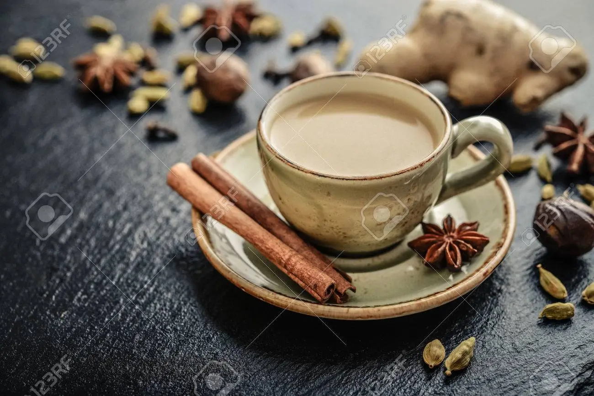

- Water
- Milk
- Sugar
- Black Tea
- Fresh Ginger
- Cinnamon Stick
- Boil water equal to 4/5ths of the desired cup size.
- Add 1 Packet of Black Tea, 1 stick of Cinnamon, 3-4 slices of Ginger, Sugar to taste.
- Pour the water in the cup, mix, let rest for 2 minutes.
- Add Milk until cup is almost full, mix again.
- Drink when it doesn't burn your tongue lmfao